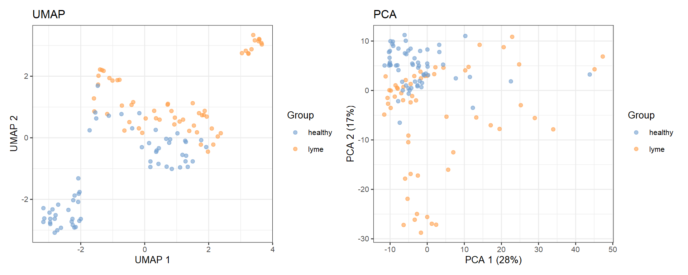
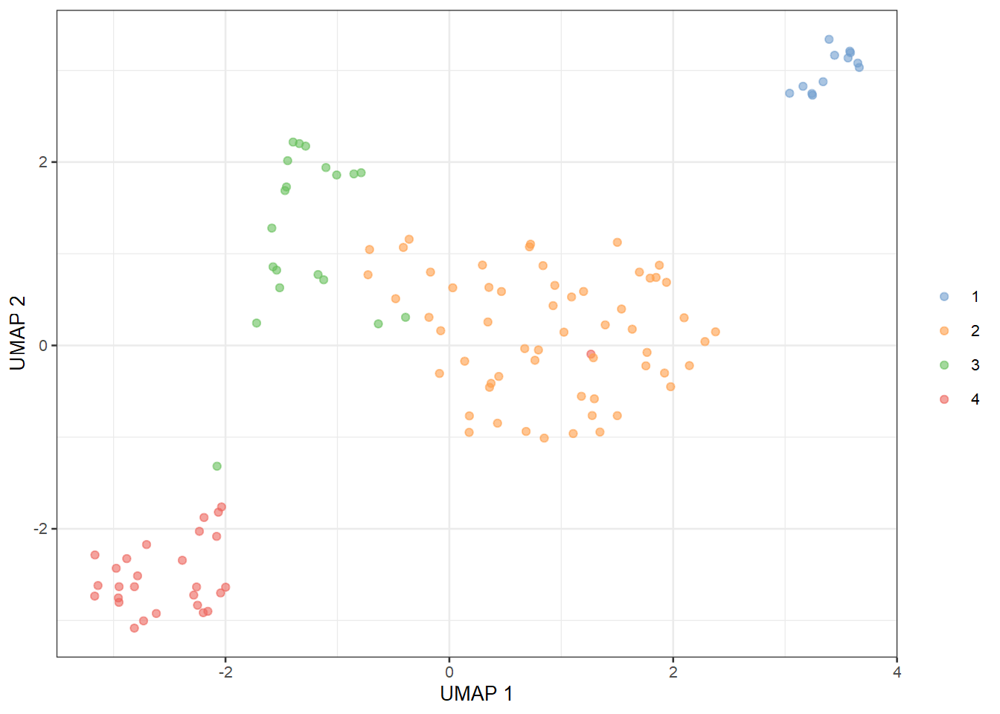
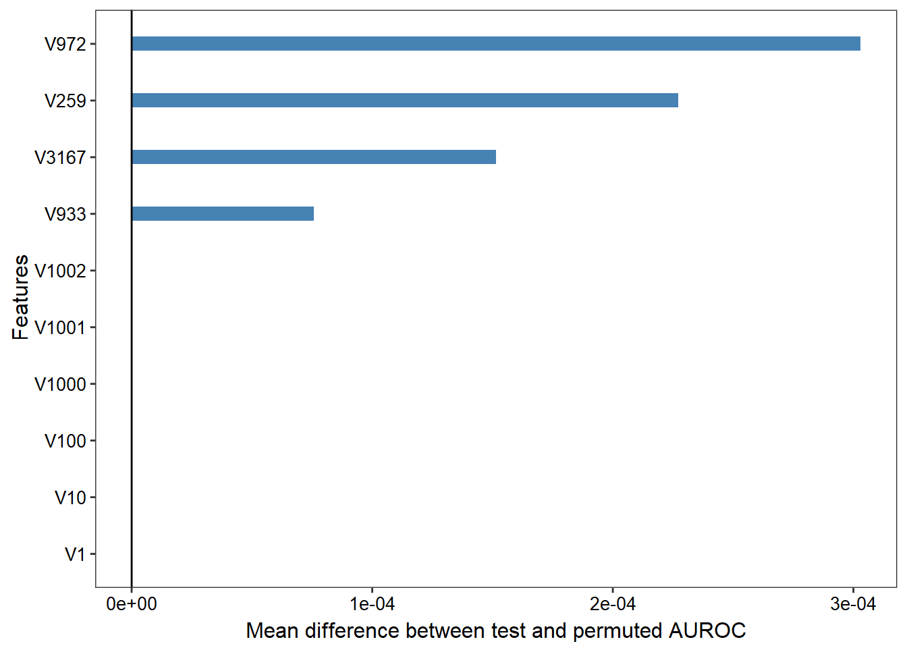

Lyme classification report
Analysis of the following data set: - USA data.
Sample similarity
The samples are log10-transformed and features scaled before ordination.
Unsupervised ordination
Ordination is shown here for all samples combined.

Unsupervised clustering
With 6 clusters.

Classifier results
The pipeline was run with the following parameters
- Method: glmnet
- CV folds: 2
- Training fraction: 0.8
- Folds: 5
Predicted values and class probabilities for the independent test data
| Sample | Original | Prediction | healthy | lyme |
|---|---|---|---|---|
| S9 | lyme | lyme | 0.03 | 0.97 |
| S10 | lyme | lyme | 0.19 | 0.81 |
| S13 | lyme | lyme | 0.16 | 0.84 |
| S18 | lyme | lyme | 0.02 | 0.98 |
| S19 | lyme | lyme | 0.01 | 0.99 |
| S23 | lyme | lyme | 0.24 | 0.76 |
| S26 | lyme | lyme | 0.02 | 0.98 |
| S29 | lyme | lyme | 0.05 | 0.95 |
| S32 | lyme | lyme | 0.09 | 0.91 |
| S33 | lyme | healthy | 0.64 | 0.36 |
| S40 | lyme | lyme | 0.25 | 0.75 |
| S53 | lyme | lyme | 0.39 | 0.61 |
| S54 | lyme | lyme | 0.29 | 0.71 |
| S60 | lyme | lyme | 0.32 | 0.68 |
| S61 | healthy | healthy | 0.94 | 0.06 |
| S65 | healthy | healthy | 0.89 | 0.11 |
| S70 | healthy | healthy | 0.89 | 0.11 |
| S74 | healthy | healthy | 0.80 | 0.20 |
| S80 | healthy | healthy | 0.98 | 0.02 |
| S86 | healthy | healthy | 0.98 | 0.02 |
| S89 | healthy | healthy | 0.86 | 0.14 |
| S100 | healthy | healthy | 0.71 | 0.29 |
| S108 | healthy | healthy | 0.79 | 0.21 |
| S112 | healthy | healthy | 0.69 | 0.31 |
Confusion matrix
This shows classification performance for the independent test samples.
Confusion Matrix and Statistics
Reference
Prediction healthy lyme
healthy 10 1
lyme 0 13
Accuracy : 0.9583
95% CI : (0.7888, 0.9989)
No Information Rate : 0.5833
P-Value [Acc > NIR] : 4.372e-05
Kappa : 0.9155
Mcnemar's Test P-Value : 1
Sensitivity : 1.0000
Specificity : 0.9286
Pos Pred Value : 0.9091
Neg Pred Value : 1.0000
Prevalence : 0.4167
Detection Rate : 0.4167
Detection Prevalence : 0.4583
Balanced Accuracy : 0.9643
'Positive' Class : healthy

Notes
Four distinct training methods are available: decision trees, random forest, SVM with radial basis kernel, and gradient boosted trees, as well as additional outputs such as cluster plot, probability ellipse plot, feature importance, and treating missing values with k-nearest neighbors. Furthermore, hyperparameters may be tuned separately and adjusted by user.